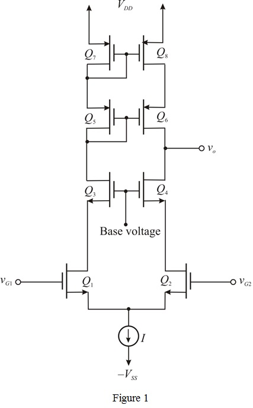

Write the expression for the voltage gain .
.
Substitute for  and
and for
for .
.
Hence, the expression for the gain is .
is .
(a)
Sketch the circuit of the active-loaded MOS differential amplifier in which the input transistors are cascaded, and a cascade current mirror is used for the load.

(b)
The expression for the output resistance is,
The expression for the output resistance is,
Write the expression for the voltage gain.
Substitute for and for .
Hence, the expression for the gain is .
 for and.
for and.
Therefore, the differential voltage gain is .
is .